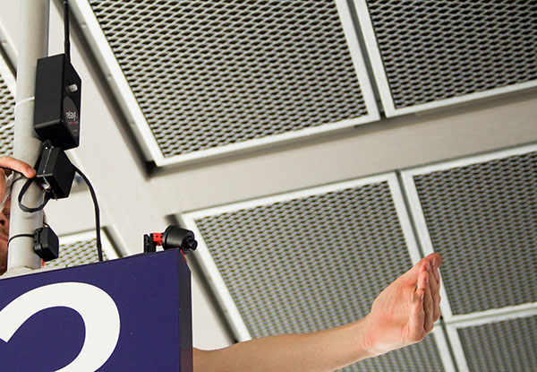
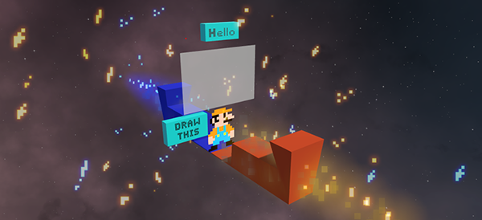

I am a PhD Fellow at the Department of Computer Science at University of Copenhagen. I research within the field of human-computer interaction with a focus on virtual and augmented reality. I’m part of the BodyUI, a European Research Council project, working under the supervision of Kasper Hornbæk.
Recently I interned at the Hasso Plattner Institute at the Human Computer Interaction Lab headed by Patrick Baudisch.
Previously I’ve worked on prototyping and deploying industrial internet of things products for relayr. I received my MSc from the KTH Stockholm and TU Berlin. My MSc thesis, Interaction with Transparent Displays, was completed under the supervision of Jörg Müller, David Lindlbauer, and Robert Walter.
You can contact me via klemen.lilija[at]gmail.com.
Projects
Augmented Reality Views For Ocluded Interaction
We rely on our sight when manipulating objects. When objects are occluded, manipulation becomes difficult. Such occluded objects can be shown via augmented reality to re-enable visual guidance. However, it is unclear how to do so to best support object manipulation. We compare four views of occluded objects and their effect on performance and satisfaction across a set of everyday manipulation tasks of varying complexity. You can see the video presentation here: ACM CHI19 Glasgow.
Temporal Navigation of Spatial Recordings by Direct Manipulation
Spatial recordings allow viewers to move within them and freely choose their viewpoint. However, such recordings make it easy to miss events and difficult to follow moving objects when skipping through the recording. To alleviate these problems we present the Who Put That There system that allows users to navigate through time by directly manipulating objects in the scene. By selecting an object, the user can navigate to moments where the object changed. Users can also view the trajectories of objects that changed location and directly manipulate them to navigate. We evaluated the system with a set of sensemaking questions in a think-aloud study. You can see the video presentation here: ACM CHI20 Honolulu.
Wireless Sensor Network for Monitoring Trains
Design and development of wireless sensor network for monitoring the arrival and departure of trains. We deployed the network at one of the stations to test which sensors are wireless technologies are most appropriate for such monitoring. To hear more about the internet of things projects that I've worked on please email me as most of them are not to be shared with the public.
Shared Avatar VR Experience
In the everyday world, each of us has a single body. We are born, live and die while experiencing reality from within our body. However, in virtual reality, it does not have to be that way. Since we control this new reality, we can put one person into multiple bodies, or multiple persons into one body. During the Copenhagen Culture Night 2019, more than hundred people have experienced sharing an avatar with their partner and working together to roast marshmallows by a relaxing campfire in a forest. This application was made with Photo's networking framework and Unity's High Definition Render Pipeline.
PingPaintPunch VR @ Nordic Game Jam 2019
A mashup between Pong, painting and punching. This is a collaborative virtual reality game where two players try to replicate a pixel art by painting and punching a moving canvas. You can see the video here.
Publications
Who Put That There? Temporal Navigation of Spatial Recordings by Direct Manipulation
Klemen Lilija, Henning Pohl, Kasper Hornbæk, ACM CHI 2020
Augmented Reality Views for Occluded Interaction
Klemen Lilija, Henning Pohl, Sebastian Boring, Kasper Hornbæk, ACM CHI 2019
Influence of Display Transparency on Background Awareness and Task Performance
David Lindlbauer, Klemen Lilija, Robert Walter, Jörg Müller, ACM CHI 2016
CV
You can reach me via klemen.lilija[at]gmail.com or download my CV here.